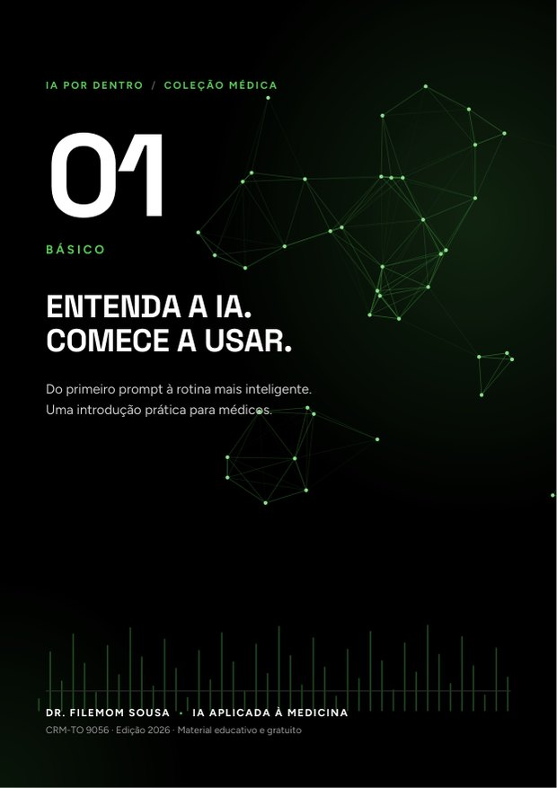
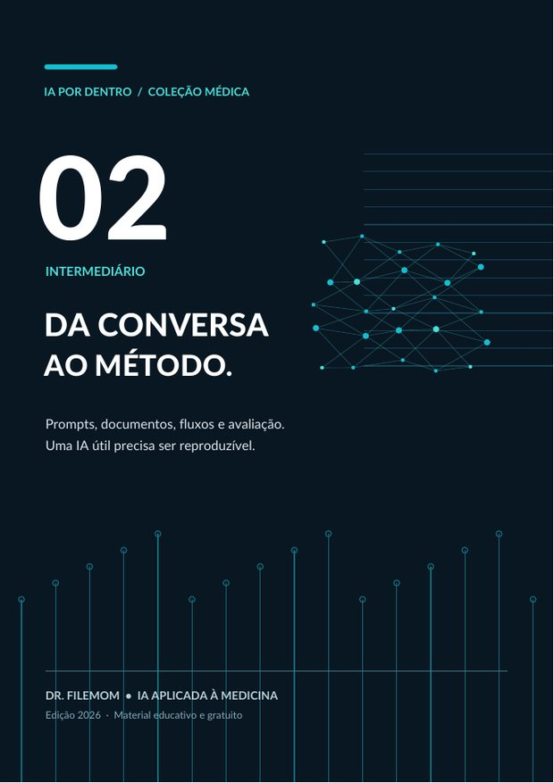
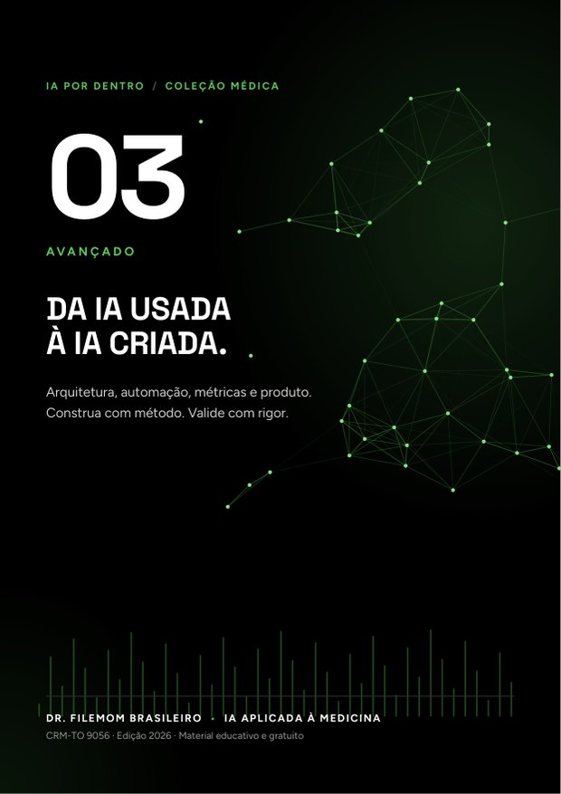

Nível 1 · Básico
Entenda a IA. Comece a usar.
Para quem usa IA em perguntas soltas e quer respostas melhores e mais seguras.
- Método PACE para escrever prompts
- Cinco usos para começar hoje
- Checklist 4C contra respostas erradas
- Desafio de 7 dias
Grátis Coleção médica · Edição 2026
Três guias em PDF escritos por um médico de plantão, com método, prompts prontos e o cuidado que a medicina exige com dados e evidência.



Cada guia termina com um desafio prático e diz quando você está pronto para o próximo.
Nível 1 · Básico
Para quem usa IA em perguntas soltas e quer respostas melhores e mais seguras.
Nível 2 · Intermediário
Para quem já usa IA no estudo e quer rotinas repetíveis, com fontes e qualidade medida.
Nível 3 · Avançado
Para quem quer construir sistemas e produtos de IA para médicos, clínicas ou hospitais.
Quer os três? Baixe a coleção completa em um arquivo .zip (240 KB).
Baixar os 3 guiasÉ o método do guia básico: Papel, Alvo, Contexto e Entrega. Preencha os campos e copie o resultado para o ChatGPT, Claude ou Gemini.
Nunca cole nome, prontuário, exame ou qualquer dado de paciente em ferramenta de IA não autorizada.
Os três guias usam o mesmo semáforo para decidir o que pode entrar numa ferramenta de IA pública.
Conceitos gerais, dados públicos, textos seus sem dados de pacientes e casos totalmente fictícios.
Documentos internos e informações da instituição. Confira autorização, contratos e controles.
Prontuários, exames, imagens, áudios, nomes ou datas. Tirar o nome não basta para anonimizar.
Resolução CFM nº 2.454/2026 Em vigor desde 26/08/2026: a IA apoia, mas a decisão continua sendo do médico. Ler no portal do CFM
Médico em Palmas (TO), atuando na urgência e emergência, na sala vermelha e em UTI. Usa e desenvolve ferramentas de IA para estudo e rotina médica, e traduz o que funciona em conteúdo prático para outros médicos.
No Instagram, o conteúdo dos guias vira posts curtos: neurônios, tokens, viés e como aplicar na rotina.